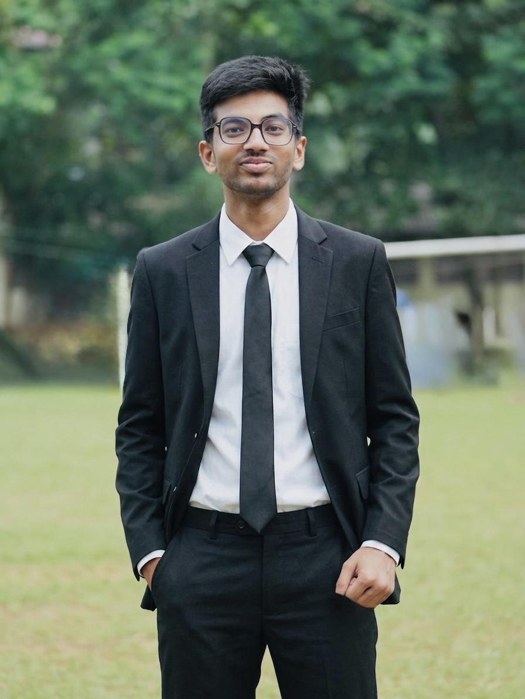

Artificial Intelligence & Machine Learning Specialist
Building intelligent AI models and Machine Learning solutions.
Undergraduate at Sri Lanka Institute of Information Technology (SLIIT) specializing in Artificial Intelligence, with professional experience as a Remote Associate IT Consultant at Nexora Labs (London, UK).
Artificial Intelligence
Machine Learning
SLIIT Undergraduate
 Nexora Labs (UK - Remote)
Nexora Labs (UK - Remote)

Available for AI & ML Projects
About Me
Artificial Intelligence & Machine Learning Specialist
Welcome to my portfolio.
Main Field & Work Experience
My primary field is Artificial Intelligence and Machine Learning. I am currently an undergraduate student at the Sri Lanka Institute of Information Technology (SLIIT), pursuing a BSc (Hons) in Information Technology Specializing in Artificial Intelligence.
During my 6-month tenure as a Remote Associate IT Consultant at Nexora Labs (London, England, UK), my team and I successfully built and delivered Topdoctors.lk, a healthcare platform connecting patients with specialist medical professionals.
SLIIT – Sri Lanka Institute of Info Tech
BSc (Hons) in Information Technology Specializing in Artificial Intelligence. Focused on machine learning algorithms, deep learning models, natural language processing, and computer vision.
Associate IT Consultant – Nexora Labs (Remote)
Completed 6 months remote tenure at Nexora Labs (London, UK). Co-developed Topdoctors.lk with the team, gaining expertise in Information Technology consulting and system delivery.
Official Channels
Explore my open-source work on GitHub and connect professionally on LinkedIn.
Career
Work Experience
My professional Information Technology consulting experience in healthcare software systems.
Associate IT Consultant (Remote)
Remote | London, England, United Kingdom (6 Months Period)
Worked remotely as an Associate IT Consultant for a 6-month period for Nexora Labs (London, UK) before stepping down to focus fully on AI & Machine Learning.
- Co-engineered and delivered Topdoctors.lk, a healthcare platform connecting patients with specialist medical professionals.
- Implemented doctor directory search, appointment scheduling workflows, and optimized web user interfaces.
- Collaborated remotely in an international team setup using agile methodologies and asynchronous communication.
Academic
Education & Qualifications
My degree specialization in Artificial Intelligence and school background.
Undergraduate Student
Sri Lanka Institute of Information Technology (SLIIT)
Specializing in Artificial Intelligence
Pursuing a BSc (Hons) in Information Technology Specializing in Artificial Intelligence at the Sri Lanka Institute of Information Technology (SLIIT).
- Developing machine learning models, neural networks, and computer vision applications in Python and PyTorch.
- Studying Natural Language Processing (NLP), data pipelines, feature engineering, and model evaluation metrics.
- Building production-ready MLOps microservices and vector similarity search models.
High School Education
Kandy, Sri Lanka | 2011 – 2024
Completed primary and secondary education at St. Sylvester's College, Kandy.
- Built a strong academic foundation in Physical Science, Mathematics, and Computer Studies.
- Actively participated in school Information Technology societies, science exhibitions, and extracurricular activities.
- Developed early passion for software engineering, logic design, and artificial intelligence.
Capabilities
Skills in Artificial Intelligence & Machine Learning
Artificial Intelligence & GenAI
Specializing in deep learning, neural network architectures, and Retrieval-Augmented Generation (RAG) pipelines.
Machine Learning & Data Science
Supervised and unsupervised ML, model evaluation metrics (F1, AUC-ROC), feature engineering, and predictive analytics.
MLOps & Model Deployment
Packaging models into REST APIs via FastAPI, containerizing with Docker, and automated deployment pipelines.
Vector Databases & Retrieval
Working with vector search engines (ChromaDB), text embeddings, semantic similarity matching, and knowledge retrieval.
FastAPI REST Microservices
Designing high-throughput, low-latency API endpoints for live ML model inference and real-time data processing.
Docker Containerization
Creating reproducible Docker containers for ML inference microservices, backend services, and cloud deployments.
Projects
Artificial Intelligence, Machine Learning & Web Builds
Explore projects by category and filter through technologies and solution domains.
Contact
Let's Connect & Collaborate
Open for opportunities, projects, and discussions in Artificial Intelligence and Machine Learning.